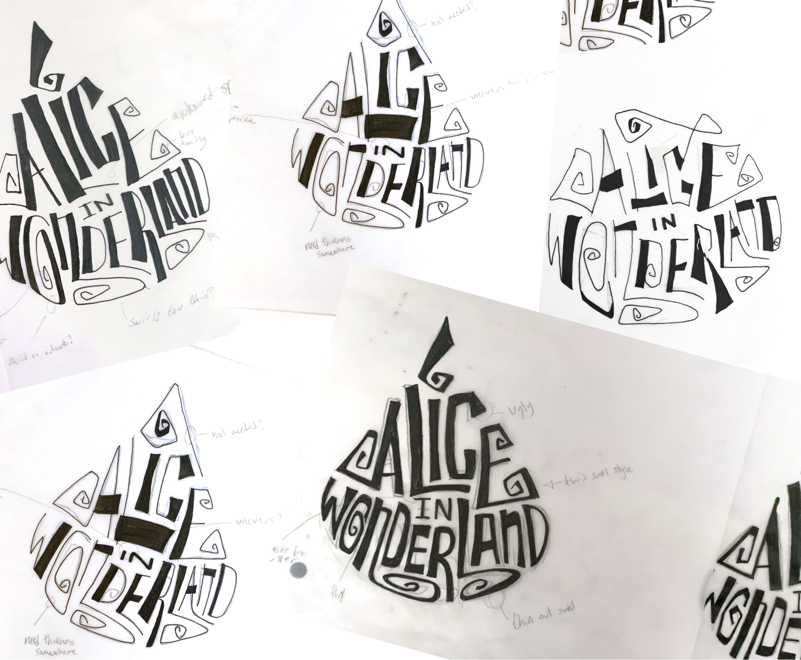
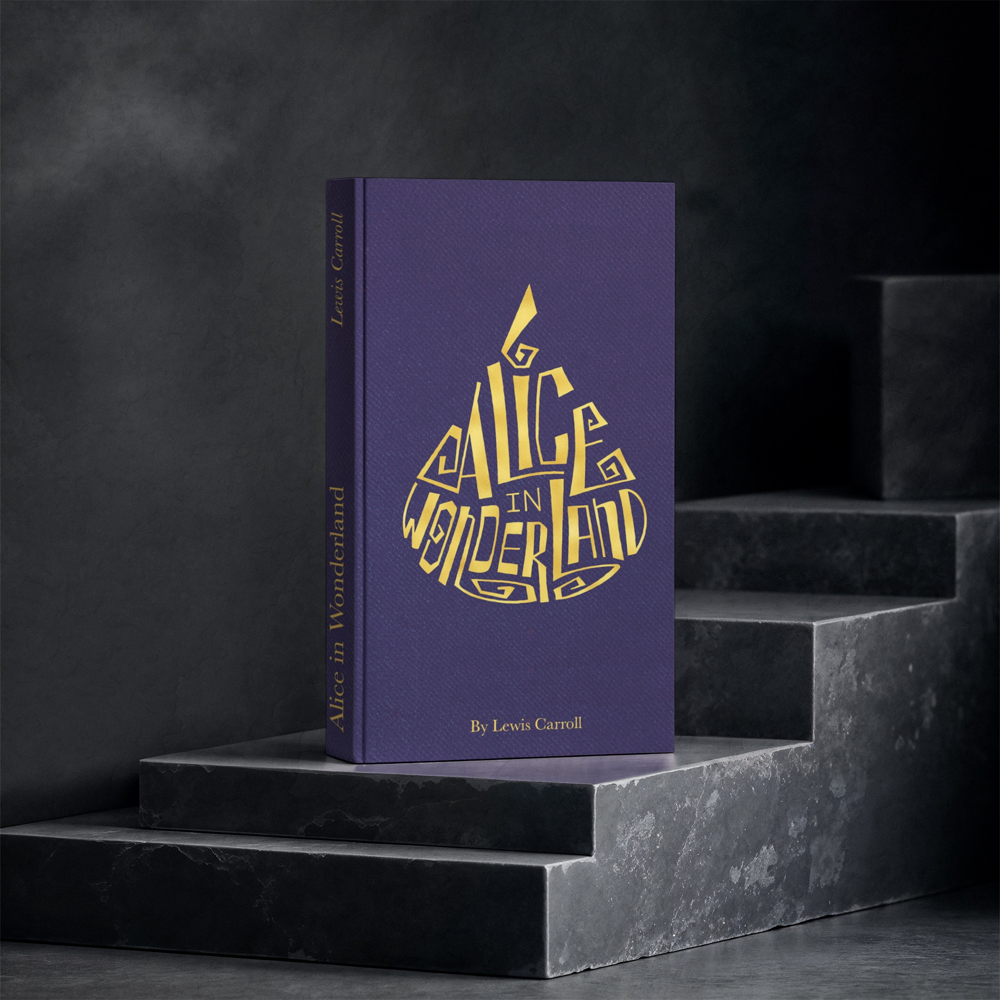
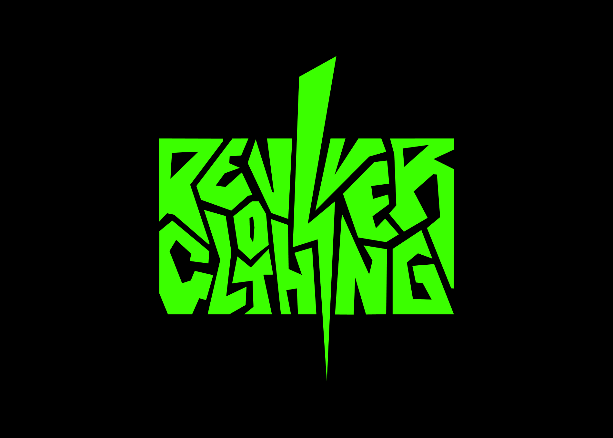
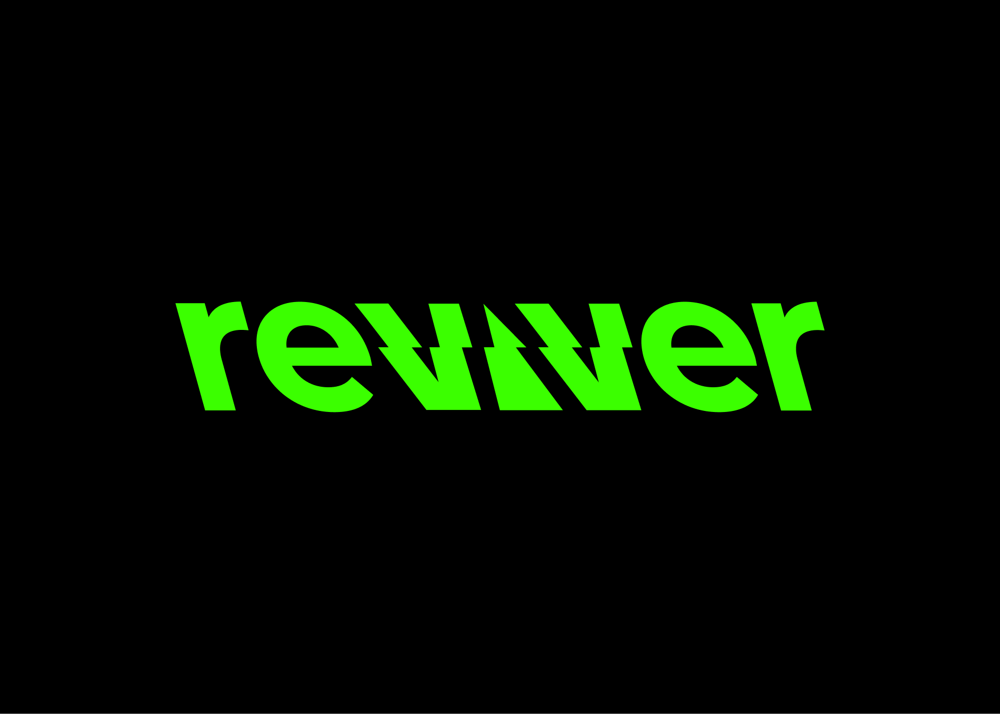
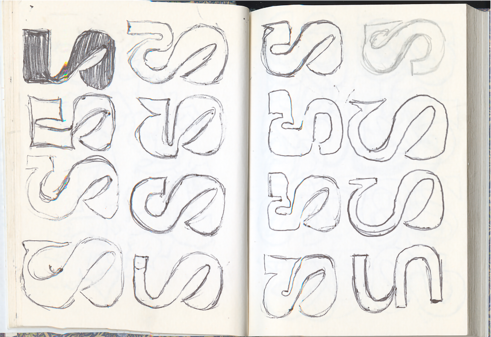
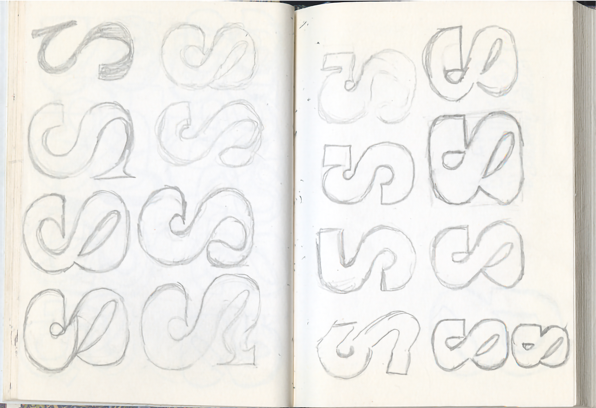
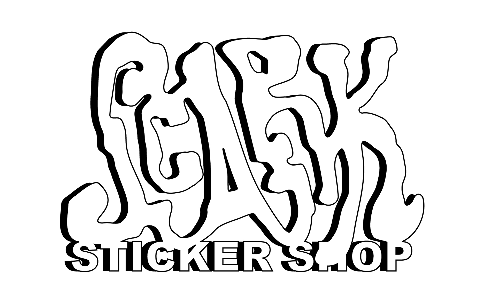
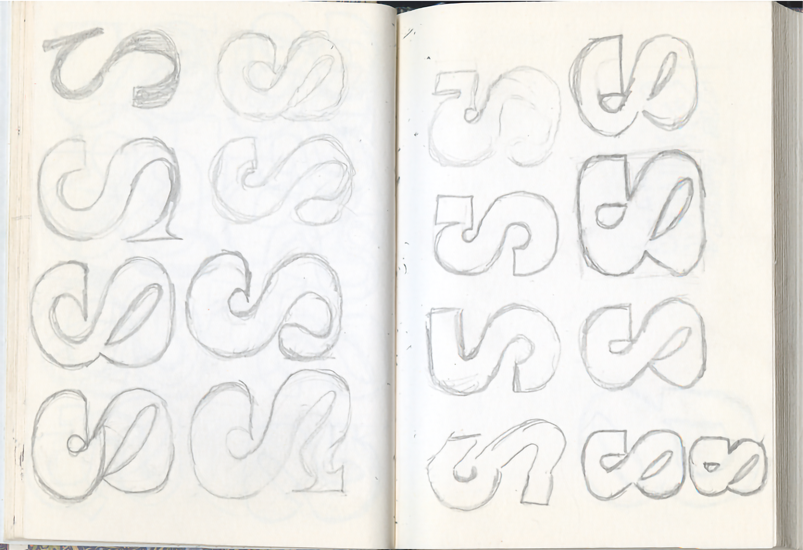
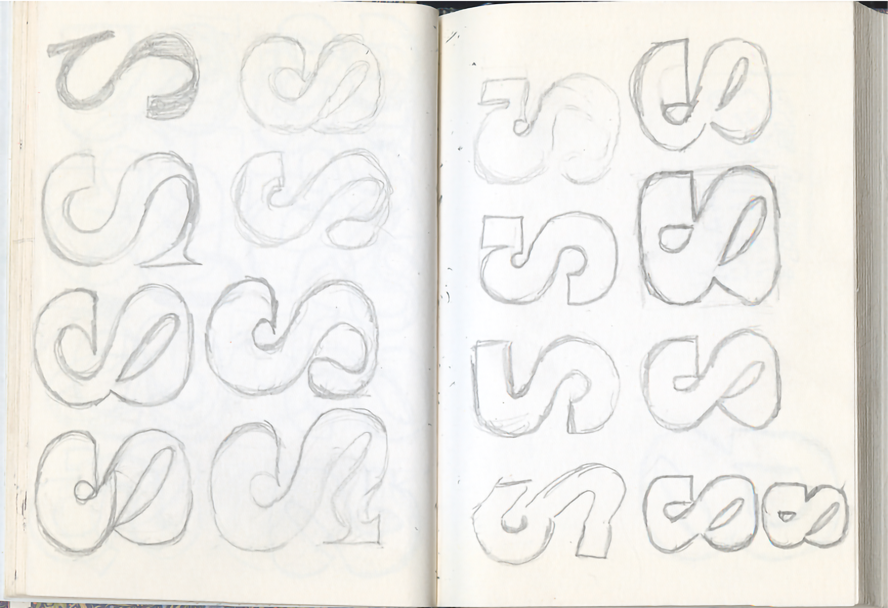

I designed Zealous to figure out how momentum could be created in
a static shape. My answer was to push the thicks and thins to the
extreme, which taught me how the right optical trick always beats
a perfect alignment.


Alice in Wonderland Lettering
Using ink and tracing paper, and iteration after iteration, I hand
lettered an Alice in Wonderland book cover to encapsulate the
whimsy and oddity of the original Lewis Carroll novel.


Reviver Clothing Logos
Using ink and tracing paper, and iteration after iteration, I hand
lettered an Alice in Wonderland book cover to encapsulate the
whimsy and oddity of the original Lewis Carroll novel.


Personal Logo Iteration
These are just a few of the many, many sketches that went in to
the development of my personal logo. The problem: how can I convey
my adaptability as a designer? The solution: A hybrid glyph that
represents how I can chameleon from one brand feel to another.

Scark Logo
Scark is my shop brand where I sell illustrated sticker and pins.
Inspired by streetwear and scate culture, this logo ended up being
a tad too illegible for the brand I needed. Curious about Scark?
Take a peak
here.
About Me
Hi! I am a IDEA student specializing in branding. I am passionate
about making smart, process-driven design executed with distinct brand
personality. If you wanna chat about quirky design, brand projects, or
cartoons, feel free to contact me.


 
